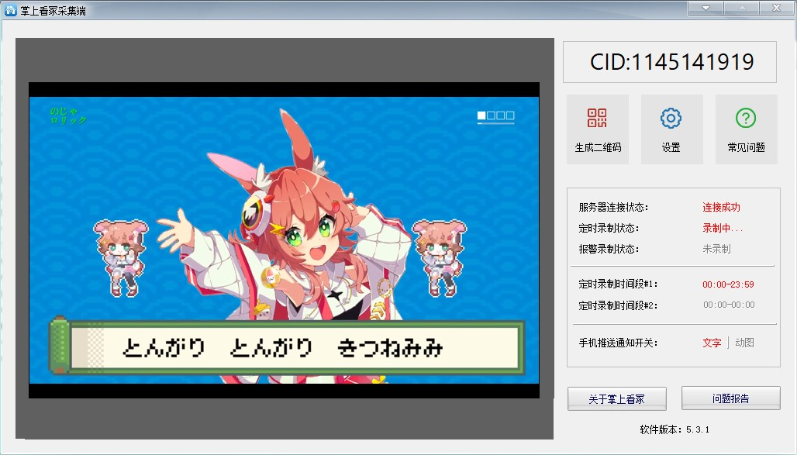
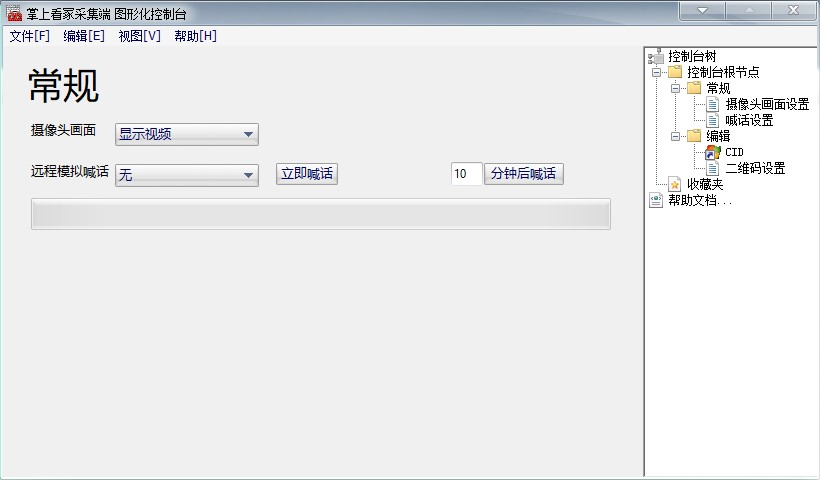
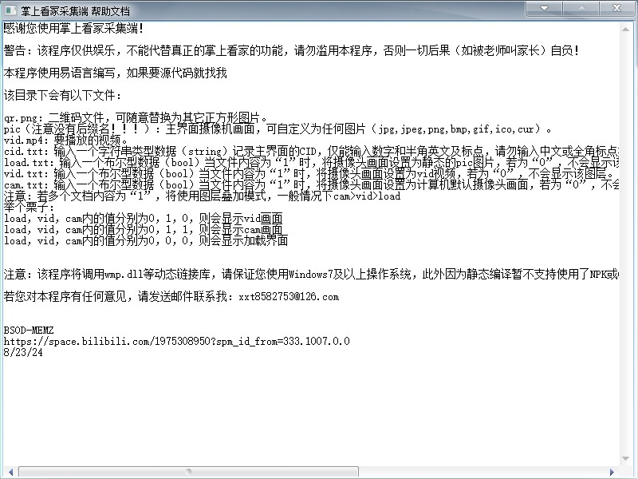

信息
信息
这是一个很老的程序，是我初二时做的，当时我们老师用“掌上看家”这个程序监控我们，所以我做了这个程序用于欺骗老师，这个程序仅在我们班内部使用，现在@AbCd班上也搞了，所以我寻思着把程序放出来给大家用。再说一下，这是我很久以前做的，水平很差，别喷我
这个程序主要功能是仿照掌上看家，让老师误以为监控是开启状态，实际上是假的，界面还是很像的（这里我随便放了个视频）
当年我给这个程序加了4种模式：直接调用摄像头、播放提前录好的视频、播放图片、假装加载中。我最推荐大家使用调用摄像头模式，因为监控开着，但是老师那边又看不到，或者也可以选择加载中模式，让老师以为网不好。为了方便大家设置，程序具有一个图形化控制台（老程序嘛，里面的链接都失效了，掌上看家都更新了好几个版本了，但是问题不大）
需要注意的是，大家一定要看清楚帮助内容，误操作会让程序崩溃
